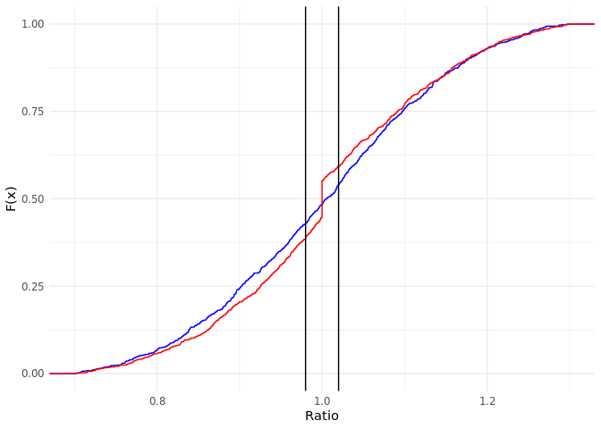

An R package to measure the performance of property assessments using standard statistics. Also includes a host of utility functions to make common assessment and evaluation tasks easier and more consistent.
You can install the released version of assessr directly from GitLab by running the following R command after installing the remotes package:
remotes::install_gitlab("ccao-data-science---modeling/packages/assessr") # Or, to install a specific version remotes::install_gitlab("ccao-data-science---modeling/packages/assessr@0.3.0")
Once it is installed, you can use it just like any other package. Simply call library(assessr) at the beginning of your script.
assessr:cod() calculates the Coefficient of Dispersion (COD)cod_ci() calculates the confidence interval of a given COD using bootstrappingcod_met() indicates whether or not the input COD meets IAAO standards (5 - 15)prd() calculates the Price-Related Differential (PRD)prd_ci() calculates the confidence interval of a given PRD using bootstrappingprd_met() indicates whether or not the input PRD meets IAAO standards (0.98 - 1.03)prb() calculates the coefficient of Price-Related Bias (PRB)prb_ci() returns the confidence interval of a given PRB using the closed-form calculationprb_met() indicates whether or not the input PRB meets IAAO standards (-0.05 - 0.05)is_outlier() returns a logical vector indicating whether a value in the input is an outlier. Uses either quantile or IQR methoddetect_chasing() indicates whether the input vector of ratios contains possible sales chasing. Uses the method proposed in the IAAO Standard on Ratio Studies and a heuristic looking for “flat spots” in the CDF of the input vectorUsing the included ratios_sample dataset, cod(), prd(), and prb() can be used to measure the performance of an assessment.
library(ggplot2) library(dplyr) library(assessr) library(knitr) # Load the sample dataset data("ratios_sample") # Calculate peformance statistics by township ratios_sample %>% group_by(town) %>% summarize( cod = cod(ratio), cod_ci = paste(round(cod_ci(ratio, nboot = 1000), 3), collapse = ", "), cod_met = cod_met(cod), prd = prd(assessed, sale_price), prd_ci = paste(round(prd_ci(assessed, sale_price), 3), collapse = ", "), prd_met = prd_met(prd) ) %>% rename_all(toupper) %>% kable(format = "markdown", digits = 3)
| TOWN | COD | COD_CI | COD_MET | PRD | PRD_CI | PRD_MET |
|---|---|---|---|---|---|---|
| Evanston | 16.398 | 14.548, 18.325 | FALSE | 1.033 | 1.015, 1.062 | FALSE |
| New Trier | 19.150 | 17.048, 21.283 | FALSE | 1.066 | 1.046, 1.082 | FALSE |
Sales chasing is when a property is selectively reappraised to shift its assessed value toward its actual sale price. The included function detect_chasing() uses novel methods to detect potential sales chasing. It is not a statistical test and is not absolute; visual inspection of ratios is still recommended.
# Generate distributions of fake ratios, including one with "sales chasing" normal_ratios <- c(rnorm(1000, 1, 0.15)) chased_ratios <- c(rnorm(900, 1, 0.15), rep(1, 100)) # Plot the CDFs of each vector. Notice the flat spot on the red CDF ggplot() + stat_ecdf(data = data.frame(x = normal_ratios), aes(x), color = "blue") + stat_ecdf(data = data.frame(x = chased_ratios), aes(x), color = "red") + geom_vline(xintercept = 0.98) + geom_vline(xintercept = 1.02) + xlim(0.7, 1.3) + labs(x = "Ratio", y = "F(x)") + theme_minimal()

# Detect chasing for each vector tibble( "Blue Chased?" = detect_chasing(normal_ratios), "Red Chased?" = detect_chasing(chased_ratios) ) %>% kable(format = "markdown", digits = 3)
| Blue Chased? | Red Chased? |
|---|---|
| FALSE | TRUE |
This package can easily be used with data from the Cook County Open Data Portal to analyze assessment performance. To measure assessment performance, you will need to gather both sales and assessed values. These are stored in two separate datasets on the data portal.
RSocrata is a package developed by the City of Chicago to wrap Socrata API requests. It allows you to easily pass a Socrata app token, which will remove the API limit on the number of rows returned. Example usage is shown below, replacing the login details with your own.
library(RSocrata) # Load unlimited rows of assessment data, default is 1,000 assessments <- read.socrata( "https://datacatalog.cookcountyil.gov/resource/uqb9-r7vn.json", app_token = "YOURAPPTOKENHERE", email = "user@example.com", password = "fakepassword" )
Socrata can also return raw JSON if you manually construct a query URL. Follow the API docs to alter your query. The raw JSON output can be read using the read_json() function from jsonlite.
library(jsonlite) # Load 100k rows of assessment data assessments <- read_json( "https://datacatalog.cookcountyil.gov/resource/uqb9-r7vn.json?$limit=100000", simplifyVector = TRUE ) # Load 100k rows of sales data sales <- read_json( "https://datacatalog.cookcountyil.gov/resource/5pge-nu6u.json?$limit=100000", simplifyVector = TRUE )
Using the collected assessment and sales data, we can perform a rudimentary analysis and measure the performance of each town ship at each stage of assessment.
library(dplyr) library(tidyr) library(knitr) # Join the two datasets based on PIN, keeping only properties that have assessed # values AND sales combined <- inner_join( assessments %>% select(pin, year, town_name, first_pass, certified, bor_result), sales %>% select(pin, year = sale_year, sale_price), by = c("pin", "year") ) # Remove sales that are not arms length, pivot to longer, then calculate # the ratio for each property and assessment stage combined <- combined %>% filter(sale_price >= 10000) %>% pivot_longer( first_pass:bor_result, names_to = "stage", values_to = "assessed" ) %>% mutate_at(vars(sale_price, assessed), as.numeric) %>% mutate(ratio = assessed / sale_price) # For each town and stage, calculate COD, PRD, and PRB, and their respective # confidence intervals then arrange by town name and stage of assessment combined %>% group_by(town_name, stage) %>% summarise( n = n(), cod = cod(ratio), cod_ci = paste(round(cod_ci(ratio, nboot = 1000), 3), collapse = ", "), cod_met = cod_met(cod), prb = prb(assessed, sale_price), prb_ci = paste(round(prb_ci(assessed, sale_price), 3), collapse = ", "), prb_met = prb_met(prb) ) %>% filter(n >= 70) %>% mutate(stage = factor( stage, levels = c("first_pass", "certified", "bor_result")) ) %>% arrange(town_name, stage) %>% rename_all(toupper) %>% kable(format = "markdown")
| TOWN_NAME | STAGE | N | COD | COD_CI | COD_MET | PRB | PRB_CI | PRB_MET |
|---|---|---|---|---|---|---|---|---|
| ELK GROVE | first_pass | 71 | 27.78232 | 19.144, 38.06 | FALSE | -0.1188841 | -0.263, 0.026 | FALSE |
| ELK GROVE | certified | 71 | 24.46860 | 15.915, 36.155 | FALSE | -0.0169422 | -0.154, 0.12 | TRUE |
| ELK GROVE | bor_result | 71 | 23.49757 | 15.304, 35.537 | FALSE | -0.0174319 | -0.152, 0.118 | TRUE |
| LAKE VIEW | first_pass | 291 | 20.05137 | 15.376, 26.288 | FALSE | -0.0163193 | -0.069, 0.037 | TRUE |
| LAKE VIEW | certified | 291 | 18.49785 | 15.126, 22.263 | FALSE | -0.0384815 | -0.078, 0.001 | TRUE |
| LAKE VIEW | bor_result | 291 | 18.44955 | 15.055, 22.444 | FALSE | -0.0425709 | -0.082, -0.003 | TRUE |